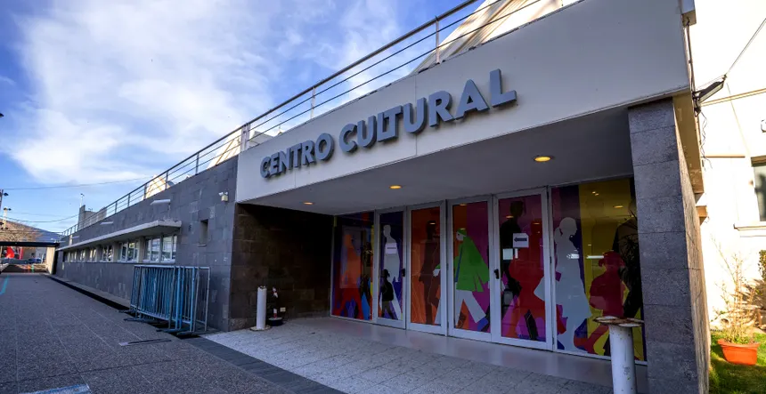
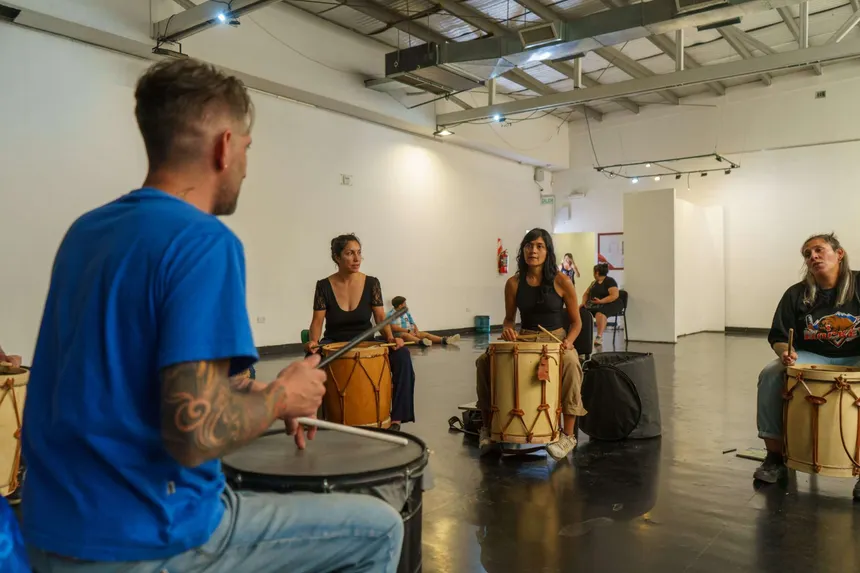
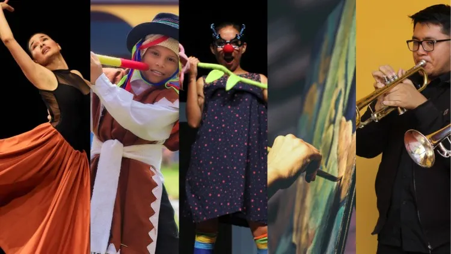

¿Quiénes somos?
Somos un espacio destinado a promover el arte, la cultura y la participación de la comunidad. En nuestro centro se realizan diferentes actividades y talleres como teatro, cocina, pintura y fotografía.

Nuestro objetivo es brindar un lugar donde las personas puedan aprender, desarrollar sus habilidades, compartir sus conocimientos y disfrutar de distintas actividades culturales.
Talleres
Los talleres culturales constituyen espacios privilegiados para la creatividad y el diálogo de ideas. Más allá de potenciar el desarrollo de capacidades técnicas y artísticas, estos talleres impulsan iniciativas de fortalecimiento social que integran a la comunidad y fomentan el trabajo en equipo.
